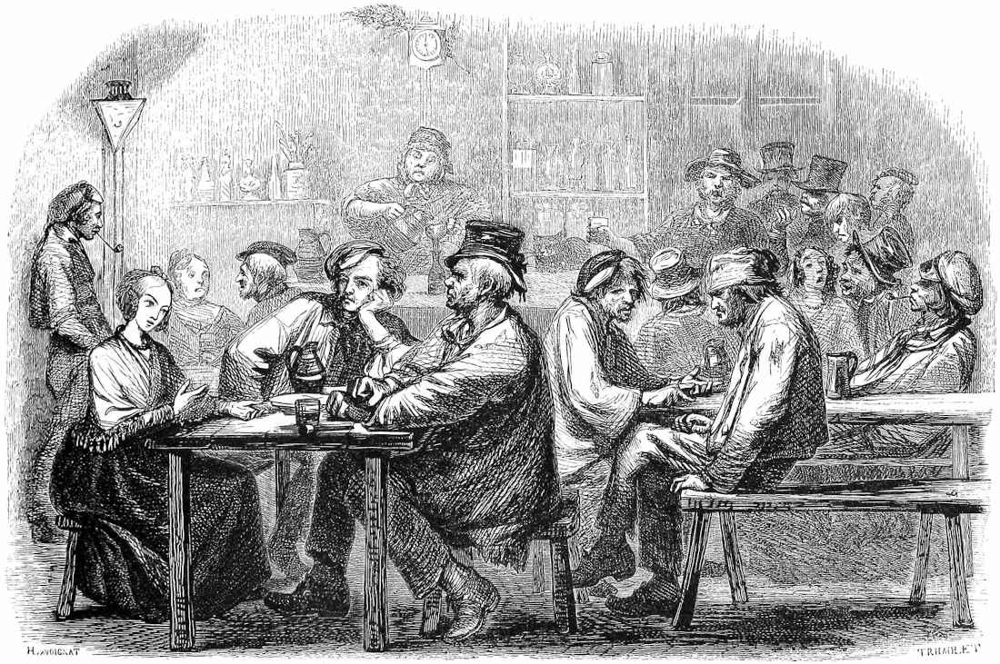

The Town is the Adventure
Settlements often serve as a safe haven or a base of operations in traditional roleplaying games, with cities being the most common place for an adventure to occur in a settlement. What about smaller settlements? As part of the RPG Cauldron Secret Santicorn I'm hosting in 2025, which is separate from the typical Rainbow OSR Secret Santicorn, I received a request by Sully Tames to explore making the settlement itself the adventure site.
The Request
The town/settlement as an adventure site in itself. What if you never had to leave the tavern to go on an adventure?
Alright! This is a good one that lets me use my research skills to understand what already exists out there and then provide some analysis of patterns and ways to make the adventure stay in a confined location. I use "settlement" to include a single more permanent building than a campsite in the smallest scale and a city in the largest scale.

The people make the place.
I open with my thoughts to directly answer the question of how this could be achieved, and then I list some of the different TTRPGs, settings, and adventures I discovered in my research of the history & relevant works.
Properties of Settlement Adventures
As we focus on adventures, there are various properties of what makes a good adventure worth considering. However, the in-depth analysis of what makes a good adventure will have to be saved for a future post, one I have been slowly gathering notes for over the past half a year. Here, we shall focus on what makes an adventure set in a settlement unique.
A settlement is
- made by people
- to serve a purpose
- that includes longterm living arrangements.
An adventure set in a settlement entails the intertwining of society with that adventure. All three parts above serve to unveil what kind of society exists behind this settlement. When the settlement is small, say a single building isolated from the rest of its civilization, then it serves as a microcosm of that society.
I'd argue that any settlement setting in an adventure will always be a microcosm of the society simply given it won't be a simulation of a full city and community. However, this is certainly emphasized in small scale for things such as towns or forts.
The customs of the people who made the place, who live there currently The people color the world and the society
The People
The people characterize the setting in how they treat it, live in it, and change it. The people of a settlement include
- those who made the settlement,
- those who lived in the settlement, and
- those who currently live in the settlement.
The aspect of time is featured throughout this list with focus on the past and present. At times it is worth considering whether those in the past considered those who would live here in the future. The things they did or didn't do for those in the future characterizes themselves and helps set the world for those to come.
The Purpose
The purpose of the settlement will vary case by case, but typically always includes the purpose of someone or something to live at that location. It gets more interesting when we consider the society that this settlement is a satellite of. Is this a settlement of a people who need a new home? Of those who were banished to the outer reaches of their core civilization? Or is it an outpost that serves to protect the rest of society from what could come from beyond? The purpose of the place can paint the originating society in broad strokes!
Longterm Living
This emphasizes what the people need to live out here, along with their culture and way of life. What is prioritized in the living quarters can inform what it was like for those to live here, and at times more subtly inform how it was intended to be lived in.
A cylindrical tower only intended by those who made it as a tactically placed watchtower may communicate this through its simple structure and minimal rooms. Those who once lived here may have embraced that intended purpose. Tally marks are scored in the walls to count down the days until they could return to a more fulfilling, or at least a more entertaining, way of life. Perhaps the ones who live here now challenge its intended design through their decorations that express their individuality and furniture to make the common room into a living room for playing games and merry making.
Emphasis on Society
The emphasis on a current living society is what puts a settlement in stark contrast to a dungeon, a crypt, desolate ruins, or the wilderness. These others can characterize the world through answers to the above primarily through environmental story telling, however they tend to be less focused on the current living people and their culture compared to an adventure in a settlement. Of course, the wilds are quite alive with their ecology and ecosystem, but they typically lack a civilization.
We see this occur in various ways for existing adventures.
Some Patterns
I have noted some patterns from recounting my own experiences in playing settlement based adventures, as well as from my research in existing settlement focused games, settings, and adventures. The main patterns I note are
- Settlements as a Dungeon,
- Social Drama,
- Slice of Life, and
- Settlement Building,
where the last three emphasize the living society the most.
The Settlement as a Dungeon
Turn the typical formula of settlements as safe havens and dungeons as dangerous on its head. Make the settlement be a dungeon!
- The classic settlement as a dungeon
- settlement as ruins, post-apocalypse, or in enemy territory
- besieged settlement
- settlement invaded or overrun
- Change to a smaller perspective: Houses or other buildings become akin to dungeons for our small adventurers.
- An inverted Bastionland: Where instead of the bastion being where you are safe, it is where you are in danger, yet you find yourself unfortunately within.
- Similar to a reverse-dungeon where the adventurers must escape the city.
- City where the citizens are turned into something like zombies
Social Drama
The tension that arises from social drama can make a very rich story.
- Mystery
- a popular adventure story pattern that makes up its own genre!
- who-done-it?
- murder mystery
- frame the party or an important allied NPC
- Romance
- Many different types of romance worth exploring. This is worth its own future post!
- Political Intrigue
- times when power changes hands
- voting, revolutions, coups
- territory or resource grabs within the settlement
- times when power changes hands
- Occupational
- commerce
- Hazardous occupations: firefighters, small town law enforcement
- Food: For example, a single bakery was pivotal to the food supply of a historical medieval town, as well as their cultural foods, such as a birthday cake or other holiday baked goods.
Slice of Life
A slice of life is a exactly a slice of a living society. To observe and — in the case of roleplaying games — experience the people's way of life in their culture. This emphasizes everyday living over the dramatic, tense moments of life, but these can be combined to create a captivating world!
Settlement Building
While this may be it own minigame in other games, and typically not an adventure in itself, these do share properties with such dedicated settlement building games that include a story to be told. Microscope is one example of such a game.
Settlement Adventure Guidelines
After identifying some properties of settlement adventures, I now provide some guidelines to help create a settlement adventure.
- Focus on the people
- Make factions with goals, and people with goals
- esp. conflicting goals,
- some of which should be petty goals when emphasizing the small scale concerns of those who live in the settlement.
- Interacting with the people of the settlement should be rewarding
- at least provide useful information to the objective or a direction to go to find more.
- A small settlement is able to be fully characterized by a complete cast of characters.
- The local culture can shine and define a society
- Taboos: Never wear a hat indoors, no idols, or do not tread dirt inside the house.
- Etiquette: A proper bow, handshake, or the order in which you use your silverware.
- Always greet someone with your name, title, and homeland.
- Make factions with goals, and people with goals
- Engage with the societal structure
- people within different occupations and different classes of society provide different perspectives.
- be aware of power and resource flow through the societal structure
- How could someone use this to further their goals or hinder another's?
- Engage with a lived-in environment
- environmental investigation
- Who saw what? Who moved or misused the community well or ceremonial wheelbarrow?
- Have the places be purposeful to their function and cultural value to the community
- Paint in broad yet distinct strokes
- the juxtaposition between the intent of a settlement and its use can be quite informative and flavorful, but it helps to provide a strong contrast between those things for them to be readily picked up in play.
Personally when planning character driven settings, I use Maslow's hierarchy of needs and address how the overall community sits on each point in this hierarchy, then the key factions and key people as necessary. The base needs in the hierarchy that tend to be required prior to being able to satisfy the higher needs. The hierarchy and some examples of each are:
- Physiological Needs: air, water, food, shelter, clothing, sleep
- Safety Needs: personal security, health & well being, stable environment, financial security, safety nets
- Love & Belonging: community, relationships, group membership, affection & intimacy
- Esteem: Self-respect, confidence, respect from others, reputation, recognition and achievement
- Self-Actualization: creativity, personal growth, moral development, pursuit of purpose
Higher level needs or wants can only be afforded if the lower levels are adequately met. The starving artist must still eat to continue to exist and create. However, some impassioned characters may sacrifice their own or other's base needs to achieve their higher needs in the short term.
Conclusion
This was a good request and it turned out to relate to some of my prior interests that I've explored a bit before. I did not include much if any of my prior work from those here and I will definitely write a survey and my thoughts on those in the future. Those topics include game design for adventures in general, social drama and dynamics, mystery, political intrigue, and romance.
I hope my analysis is interesting and helps reveal some patterns that may be used in the design of settlement adventures!
This was a part of the RPG Cauldron Secret Santicorn event. Check out what others have written and join the discussion!
History & Relevant Works
It is worth exploring some history and prior works that have provided such adventures within the settlements themselves as I think they will provide nice examples and inspiration while also providing some insight into how to do this in a general way. Most common are large scale settlements as cities and in general can even be treated as dungeons themselves. Call of Cthulhu and the like also tend to provide some adventures for specific settlements or even single buildings, such as manors. Of course, this list is not exhaustive and some of these can go beyond the scale I've placed them within.
Cities
These tend to be essentially Megacities, which are expansive or even procedurally generated like Megadungeons.
- Heroic or High Fantasy: Definitely swords and varying levels of sorcery
- Wilderlands of High Fantasy, 1976-1983, 2004-2005
- Cities: A Gamemaster's Guide to Encounters and Other Rules For Fantasy Games
- System: agnostic
- Wikipedia
- Lankhmar - City of Adventure, 1985-1992,
- Thieves' World: The city of Sanctuary, the Rankan Empire, 1981-86, 2005-07
- System: Generic, Runequest 3rd, d20 system
- Wikipedia
- Freeport: The City of Adventure, 2000-present
- System: Pathfinder, d20 system
- Genre: Swashbuckling Medieval fantasy
- RPG Geek
- Doskvol 2017--present
- Spire, 2018
- The spire is a city with a focus on the players as Drow aiming to overthrow the city's oppressive societal structure.
- RPG Geek
- Kingdom, 2013
- A game for creating kingdoms and their stories
- Can be used with Microscope with some work, by the same author Ben Robbins.
- RPG Geek
- His Majesty the Worm 2024
- Features some generation rules for dungeons and cities.
- Appendix D: City Generation using Tarot Cards
- Appendix E: Underworld Generation also using Tarot Cards
- RPG Geek
- Features some generation rules for dungeons and cities.
- Bazaar of Lies, 2025
- One Page Dungeon urban heist crawl focusing on a heist in a public marketplace
- A Games Master's Guide to The Free City of Dunromin
- The Game Master's Book of Instant Towns and Cities
- Cyberpunk
- Cities Without Number
- Cyberpunk Night City
Towns & Villages
- Post-apocalyptic
- The Quiet Year
- Wikipedia
- Each player represents parts of a community and describes their everyday activities.
- The Quiet Year
- Modern or Historic Fiction
- Village Dynasties
- A small PbtA hack focused on the small lives of a family in a quiet village.
- Various Call of Cthulhu adventures and settings
- Good Society, 2018
- Jane Austen, Victorian drama
- Wikipedia
- Kagematsu
- 1572 Japan. A village is defended by one ronin whose affection is sought after by multiple women.
- Village Dynasties
- Fantasy
- Stonetop "Hearth Fantasy" Powered by the Apocalypse.
- completed Kickstart page
- fandom wiki
- Polaris
- A tragic fantasy tale of defending the northernmost city from its end.
- Stonetop "Hearth Fantasy" Powered by the Apocalypse.
- Modern or Historic Fantasy
- Unincorporated, 2021-present
- petty small town drama
- Unincorporated, 2021-present
- Slice of Life, Cozy
- Iron Valley
- a cozy solo RPG based on Iron Sworn with community integration
- Cozy Town
- Quiet-Year variant
- Golden Sky Stories, 2020
- small town slice of life
- Iron Valley
Isolated Buildings
Cottages, mansions, farms, forts, and roadside inns are among the smallest settlements you can get with some spark of society, while still being separated from it all. The civilization or really civility in these locations are small slivers of the society that they exemplify. The culture and customs are still present, albeit different based on the local changes that occur in isolation.
- Science fiction
- A Mansion Most Vile, 2025
- Modern or Historical Fiction: Rare to no magic for common people
- The Vicar is Coming for Tea re-released for posterity 2022
- Takes place in a "lovely little cottage in the green hills of Yorkshire".
- The Wizards Tower, 2021
- System: A Descendant of the Queen (For the Queen)
- Located in a wizard tower of infinite rooms is similar to a dungeon, yet provides an idea that could be applied to any large enough isolated building, a village, or a town to be explored to gain information about what happened to a missing relative of important person of interest and uncover their secrets.
- Call of Cthulhu features many mysteries that take place entirely in one building or a single town. Some include:
- Arkham setting is a town.
- Mansions of Madness
- Looks like 4/5 stay in one mansion or town.
- Each of the 7th ed.'s free starter adventures are set in a single town or feature a single primary building and its surrounding grounds
- Alone Against the Flames - Solo Adventure set in Embershead
- The Dead Boarder, in a boarding house in 1920s Rhode Island
- The Lightless Beacon, on a small island with a lighthouse
- The Haunting, in a haunted house
- 1shotadventures
- The Mound in the Yard (80’s Slasher Horror), a town
- St. Cecila's Blasphemous Bordello (Old West – Down Darker Trails)
- An Opera Unceasing (Victorian Horror)
- Yazeba’s Bed and Breakfast
- a directed roleplaying slice-of-life game about relationships and people in a bed and breakfast.
- The Vicar is Coming for Tea re-released for posterity 2022
- Stewpot: Tales From a Fantasy Tavern
- for 3-4 players
- play retired adventurers running a tavern
Settlement (Setting) Building
These games either constrain their focus to a village or town or could be played with such a constraint.
Microscope is a roleplaying game where players create a fictional timeline and role-play specific events in that timeline. This could be used to tell the story of a village, town, or otherwise. This being a game itself could be the game and "adventure" told through Microscope alone. Otherwise, this could establish the town as a setting to be played through.
- Settlement Building Minigames or Procedures
- His Majesty the Worm city building
- Mausritter includes some settlement building
- Villages of Valeria A village building card game.
- Ugly Gryphon Inn: solo tavern management
- Settlement Management
- Settlement Generation
- Game component methods
- Machi Koro (town build card system)
- Hex generation for settlements using Tarot cards
- Online web tools
- Game component methods
Others Across the Web
Through the blogosphere, Reddit, and elsewhere, we can find some other wonderful lists or ideas.
- Survival in Settlements by murkdice
- e.g., survival from famine, natural disasters, uprisings, martial law, or industrial accidents
- A brief blog post pertaining to creating towns with adventure within.
- Key locations with placement.
- NPCs & Factions with their own behaviors & goals. Place in map.
- Events & encounters and emphasize escalation and link to NPCs, factions, and locations.
- Resource pressure, good for survival games and building tension.
References
- Horvath, Stu. Oct. 10, 2023. "Monsters, Aliens, and Holes in the Ground". MIT Press.